婚禮是人一輩子最重要的事情之一，
也是最難忘的回憶。
與相愛的人並肩迎接新的生活，
也希望能夠得到周遭親朋好友最大的祝福。
也是最難忘的回憶。
與相愛的人並肩迎接新的生活，
也希望能夠得到周遭親朋好友最大的祝福。
GREEN BAKERY 綠帶純植物烘焙，
秉持著愛護生命與自然的理念，
用純植物的方式來製作囍餅，
我們不採用任何動物性的食材，
就是希望每一對新人，
在人生中最重要的時刻，
能透過對生命的愛與尊敬，
得到來自天地萬物的最大祝福。
秉持著愛護生命與自然的理念，
用純植物的方式來製作囍餅，
我們不採用任何動物性的食材，
就是希望每一對新人，
在人生中最重要的時刻，
能透過對生命的愛與尊敬，
得到來自天地萬物的最大祝福。
純植物喜餅介紹
使用有機食材，獨創純植物烘焙
堅持嚴選最純淨的高品質食材 : 芬蘭有機麵粉、義大利原裝進口植物油，法國CACAO BARRY巧克力、日本琦玉焙茶、綠藻抹茶...不使用任何動物性成分與化學添加物，單純呈現優質食材本身的色澤與香氣，製作獨一無二的Vegan純植物手工餅乾。
希臘雪球系列
以杏仁粉及有機椰子油搭配非基因改良黃豆粉，創作出入口即化的希臘微笑雪球餅乾。麻香花椒與巧克力、綠藻抹茶與台灣春茶，成為出其不意的美妙和諧。
微笑雪球
彷如曬到太陽而微笑的雪球是以有機椰子油與黃豆粉來製作，鬆鬆脆脆的口感有著淡淡的椰子香氣，配上茶與咖啡是一個很質樸卻是很有內涵的茶點。
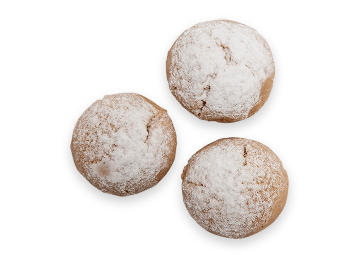
花椒巧克力雪球
使用法國頂級巧克力，少許有機蔗糖，些微花椒香氣，讓巧克力風味更顯特色，讓尾韻綿延不絕。
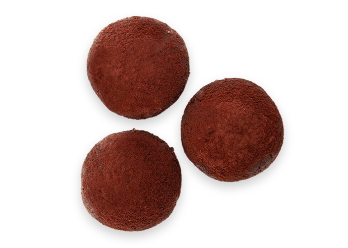
抹茶綠藻雪球
特選頂級綠藻抹茶及台灣春茶，順口回甘，些許黑芝麻提味，讓茶香芬芳在舌尖漫開，留下一抹春風綠葉。
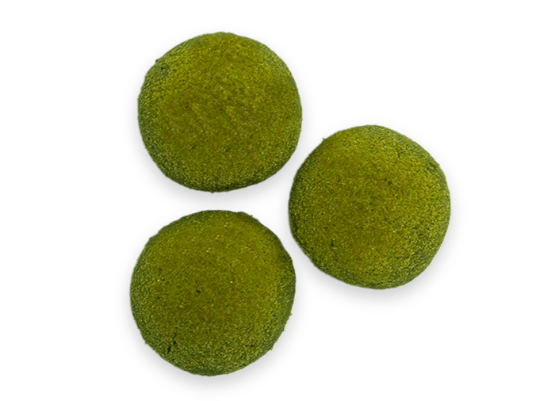
巧圓薄餅系列
一片一片手工壓製，口口香脆，樸實中的不平凡好滋味，來自繁複的工序與精選的食材。
味噌胡麻餅乾
白芝麻與燕麥為基底，涮上兩次有機味噌，繁複手工製法，仿如點石成金，在鹹與甜之間漫步悠遊，是一場沒有地圖的冒險，是一場味覺競賽。
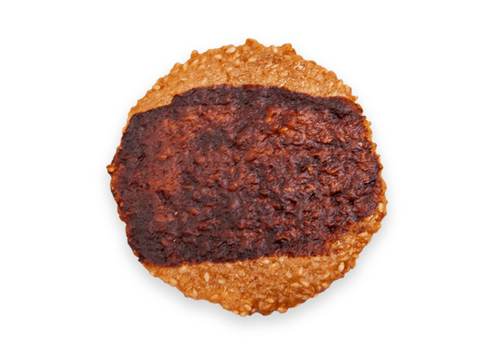
海苔胡麻餅乾
白芝麻與燕麥為基底，加入日式海苔跟海鹽讓口味在鹹與甜裡的曼妙裡，配上一口茶，情不自禁再吃一口。
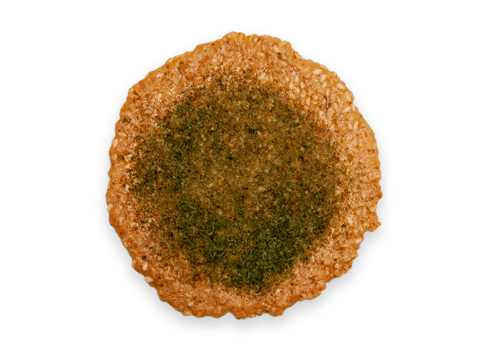
杏仁伯爵餅乾
拌入杏仁與唐寧伯爵茶，濃郁伯爵茶香，與杏仁堅果香氣和諧搭配，獨特不膩口。
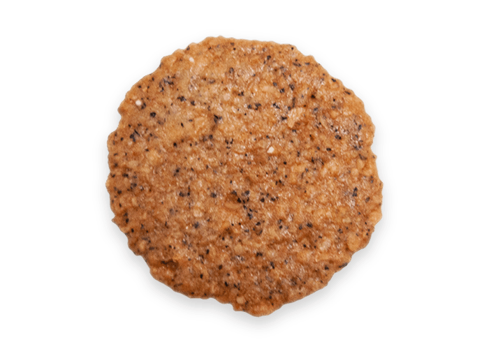
蔓越莓薰衣草餅乾
使用蔓越莓果乾與薰衣草籽，將兩種經典口味完美結合，香甜的蔓越莓，優雅的薰衣草，每一口飽滿綿密的花果香輕輕漫舞著，最後再點綴上玫瑰花，浪漫滿分的好滋味！
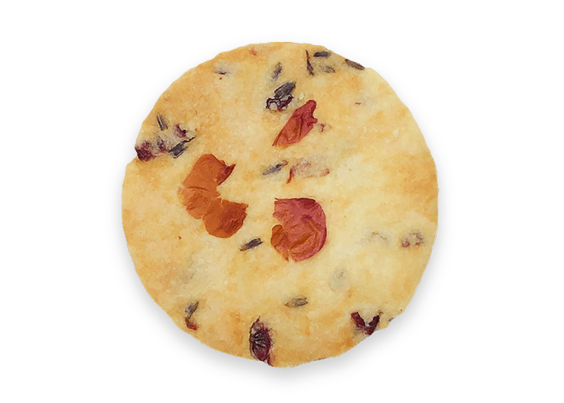
香料風味系列
小茴香、七味辛香、義大利香草、日本焙茶等…多種天然香料，發揮純植物的魔法，創造出各種不同風格口味的特色餅乾。
琦玉焙茶煎餅
採用來自龍貓故鄉－日本琦玉狹山的經典焙茶，搭配杏仁片與燕麥做為基底，極厚瓦片，香脆迷人，大量研磨的焙茶創造驚奇的茶香，完美融合多層次風味。
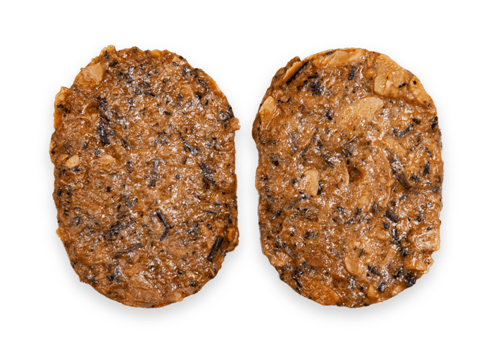
小茴香杏仁煎餅
使用來自日本香料專家HARVEY’S的獨家香料，由綠帶主廚研發搭配極厚瓦片，酥脆口感與杏仁香氣，加上獨家天然配方香料，創造出甜與鹹的極致合奏！
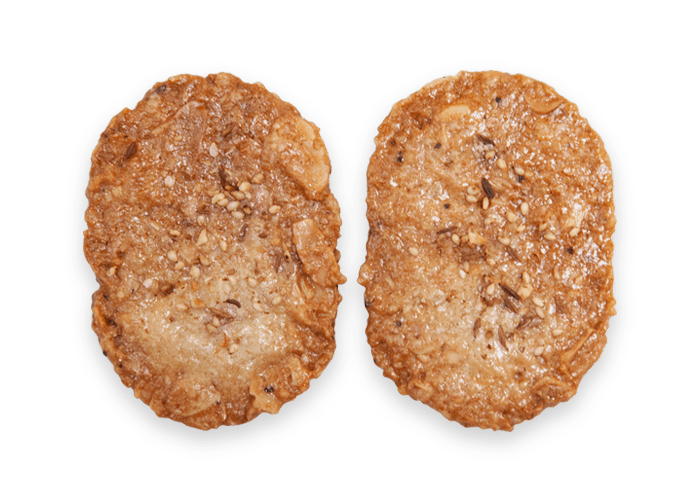
七味唐辛子煎餅
天然海鹽、燕麥、有機豆漿為基底，最後烘烤時撒上了七味唐辛子，微辣口感，就像是熱戀中的情人，意外的刺激。
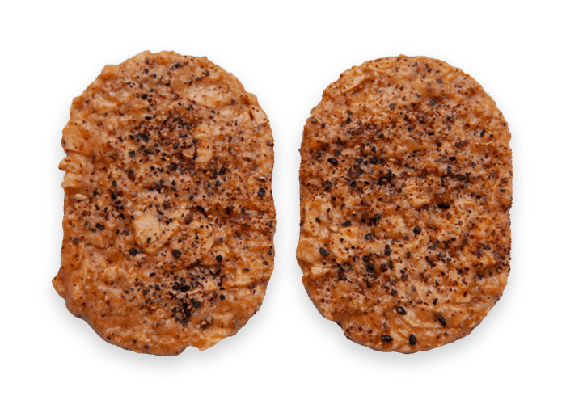
南瓜籽煎餅
加入大量南瓜籽與燕麥、有機豆漿、天然綠藻…經過烘烤後的堅果香味，一口咬下滿滿的南瓜籽，脆而不甜，越嚼越香。
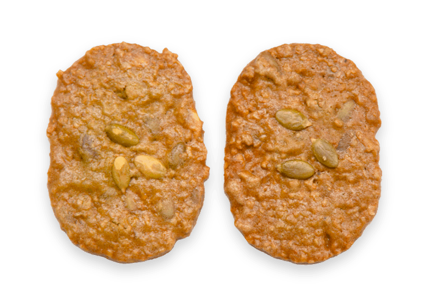
義式香料餅乾棒
由杏仁粉、義大利葵花油做出餅乾基底，使用義式香料、夏威夷黑鹽和迷迭香，多種香料創造出迷人的鹹香風味，黑胡椒、肉桂與辣椒帶出精彩尾韻，口感酥脆加上獨特香氣，讓人越吃越涮嘴！
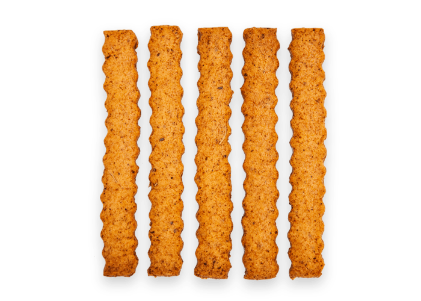
不敗經典餅乾
無可取代的經典口味，嚴選使用純淨自然的好食材，發揮出最迷人香氣，讓人忍不住一口接著一口。
摩卡巧克力餅乾
濃郁苦甜巧克力滑順溶化在舌尖，留有些許花生韻味，杏仁片香氣完美搭配，甜度極低，難忘的好滋味，招攬了不少忠實粉絲。
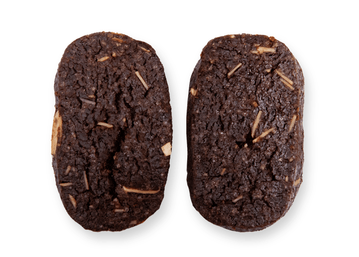
極黑芝麻餅乾
黑芝麻搭配竹炭粉，再融合杏仁粉以及大豆卵磷脂、有機糖、葵花油…滿滿芝麻香氣讓您一片接一片，越黑越健康。
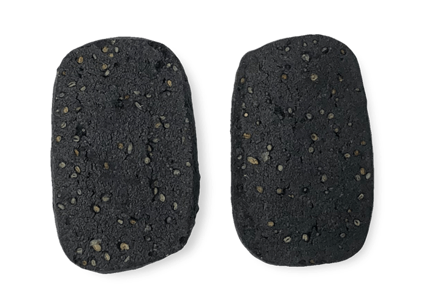
特濃咖啡餅乾
量的濃郁咖啡加入有機黑糖、有機豆漿與杏仁粉，散發出濃郁香氣與優雅細緻的口感，充滿層次的自然風味。最後在灑上咖啡粉烘烤，讓迷人香氣更上一層！
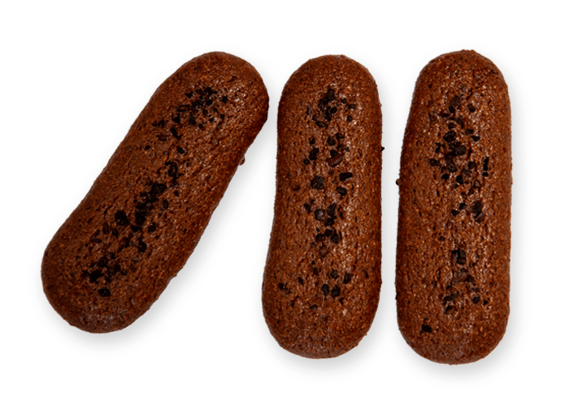
義式經典脆餅
經過兩次烘烤後，香脆紮實，蔓越莓X葡萄乾X香橙，三種果乾混和在餅乾中，創造出多重味覺層次，低熱量減糖配方，午後解饞沒有罪惡感。
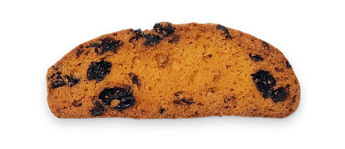
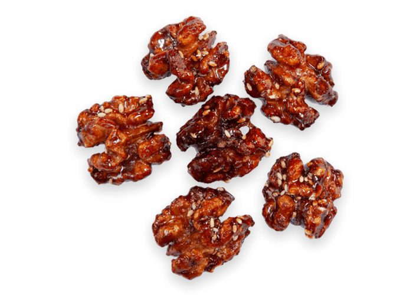